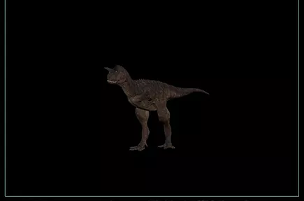
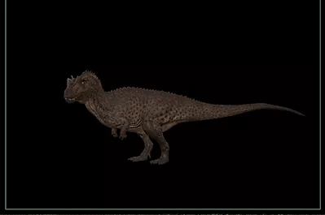
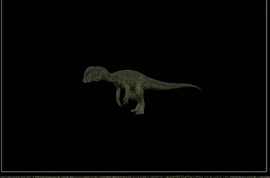
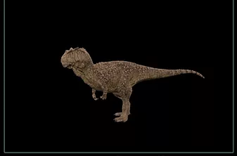
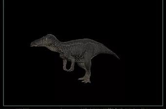
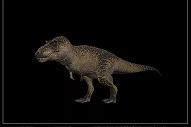
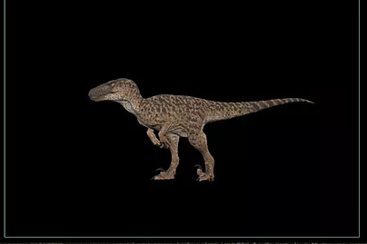

-Durée de progression : De hatchling à juvénile : 30 minutes De juvénile à jeune adulte : 60 minutes De jeune adulte à full adulte : 120 minutes ----------------------------------------- -environnement : les grandes plaines, les forets très peu boisés -avantage : dégâts de saignements moyens et Dégâts brute moyen qui donnent un dinosaure capable de chasser des proies plus grosses que lui Bonne vitesse Bonne endurance L'allosaurus peut soigner ses blessures très rapidement -Inconvénient : L'Allosaurus se stop pas immédiatement après une course il continue d' avancer sur une courte distance Il se fait vite battre par les dinosaures de son pallier ----------------------------------------- -comportement : s'attaque au territoire; ils ont une préférence pour les utahraptors -Comportement social : solitaire, ou en groupe; 1 alpha mal et femelle (se sont les seuls à pouvoir nest dans un groupe)
#Nombre d'incubation par invite: 3 #Nombre d’œuf par nest : 6 #Lieu de pondaison : généralement pas loin des troupeaux d'herbivores, cacher de la vue des prédateurs, ou pas loin d'un point d'eau #Les HatchLing :
-Durée de progression : De hatchling à juvénile : 25 minutes De juvénile à jeune adulte : 40 minutes De jeune adulte à full adulte : 70 minutes ----------------------------------------- -environnement : les plaines bien dégager en raison de ses mouvements restreints -avantage : Très Bonne vitesse Très bonne endurance Fort en attaque de passage Peut fuir lors d' un combat en toute sécurité -Inconvénient : mouvement très restreint Faibles dégâts Faibles dégâts de saignement ----------------------------------------- -comportement : -comportement social : solitaire, ou en groupe; 1 alpha mal et femelle (se sont les seuls à pouvoir nest dans un groupe)
#Nombre d'incubation par invite: 3 #Nombre d’œuf par nest : 6 #Lieu de pondaison : généralement pas loin des troupeaux d'herbivores, cacher de la vue des prédateurs, ou pas loin d'un point d'eau #Les HatchLing :

-Durée de progression : De hatchling à juvénile : 30 minutes De juvénile à jeune adulte : 50 minutes De jeune adulte à full adulte : 90 minutes ----------------------------------------- -environnement : Les grandes plaines, les forêts peu boisées -avantage : Il est agile Ils possèdent une grande vitesse surtout en embuscade Il peut tourner rapidement sur lui-même pour se défendre Le Ceratosaurus possède une endurance moyenne Il se soigne rapidement Ses dégâts sont assez élevés ce qui lui permet de chasser des proies de sa taille -Inconvénient : Faible résistance au saignement Le Ceratosaurus se soigne mal des dégâts de saignement Son bonus de vitesse ne dure que 8 secondes ----------------------------------------- -comportement : -comportement social : solitaire; souvent en groupe; 1 alpha mal et femelle (se sont les seuls à pouvoir nest dans un groupe)
#Nombre d'incubation par invite: 3 #Nombre d’œuf par nest : 6 #Lieu de pondaison : généralement pas loin des troupeaux d'herbivores ou carnivore, cacher de la vue des prédateurs, ou pas loin d'un point d'eau #Les HatchLing :
-Durée de progression : De hatchling à juvénile : 20 minutes De juvénile à jeune adulte : 50 minutes De jeune adulte à full adulte : 60 minutes ----------------------------------------- -environnement : Les forêts, les plaines, surtout la nuit -avantage : Dégâts de saignement importants Rapide Polyvalent Endurant -Inconvénient : Le Dilophosaurus tourne assez mal sur luis même ----------------------------------------- -comportement : chasseur de nuit -comportement social : vivent en groupe; 1 alpha mal et femelle
#Nombre d'incubation par invite: 2 #Nombre d’œuf par nest : 4 #Lieu de pondaison : généralement pas loin des troupeaux d'herbivores, cacher de la vue des prédateurs, ou pas loin d'un point d'eau #Les HatchLing :
-Durée de progression : De hatchling à juvénile : 30 minutes De juvénile à sub adulte : 110 minutes De sub adulte à jeune adulte : 220 minutes De jeune adulte à full adulte : 60 minut ----------------------------------------- -environnement : Les plaines ou les forêts très peu denses -avantage : Dégâts par saignement Deuxième dégât plus important des carnivores Se faufile et va assez vite Taux de morsure rapide Peut également régénérer l'endurance en marchant ou en se tenant debout -Inconvénient : Vous avez besoin de patience pour saigner vos gros adversaires Temps relativement long de régénération d'Endurance Difficile à cacher en raison de sa grande taille Il peut être dépassé par un Tyrannosaure , s'il est proche de vous Le Juvénile et le sub adulte sont relativement lents et leur endurance est faible Ils sont également très gros et requièrent beaucoup de nourriture ----------------------------------------- -comportement : Guerrier. -comportement social : solitaire, parfois en groupe selon le nombre de proies, il peut créer un lien avec une autre espèce, 1 mal dominant
#Nombre d'incubation par invite: 2 #Nombre d’œuf par nest : 2 #Lieu de pondaison : généralement pas loin des troupeaux d'herbivores, cacher de la vue des prédateurs, ou pas loin d'un point d'eau #Les HatchLing :
-Durée de progression : De hatchling à juvénile : 20 minutes De juvenile à adulte : 85 minutes De jeune adulte à full adulte : 150 minutes ----------------------------------------- -environnement : près des source d'eau -avantage : Peut nager sous l'eau et réduire de moitié le drain d'endurance de la natation Dégâts importants Bonne endurance et résistance au saignement Faible faim -Inconvénient : Vitesse de marche lente très lente Vitesse de marche en embuscade très lente ----------------------------------------- -comportement : -comportement social : vivent en groupe, mal dominant
#Nombre d'incubation par invite: 3 #Nombre d’œuf par nest : 3 #Lieu de pondaison : près de l'eau, ou cacher de la vue des prédateurs #Les HatchLing :
-Durée de progression : De hatchling à juvénile : 30 minutes De juvénile à sub adulte : 100 minutes De sub adulte à jeune adulte : 220 minutes De jeune adulte à full adulte : 100 minutes ----------------------------------------- -environnement : Les plaines ouvertes; les forêts; Prêt des eaux très actif pour assurer sa faim -avantage : Dégâts les plus importants de tous les dinosaures. Guéris ses blessures rapidement Très grande chance de se briser les os (uniquement pour les fulls adultes) Bonne vitesse d'embuscade Le Sub adulte et Juvénile ont une endurance élevée -Inconvénient : Faible dégât de saignement Ne peut que reconstituer son endurance en position assise Courte embuscade Gourmand ----------------------------------------- -comportement : joue sur la peur; gourmand -comportement social : solitaire, parfois en groupe, il peut créer un lien avec une autre espèce, 1 mal dominant, ils sont méfiant face au étranger,
#Nombre d'incubation par invite: 1 #Nombre d’œuf par nest : 1 #Lieu de pondaison : généralement pas loin des troupeaux d'herbivore, cacher de la vue des prédateurs, ou pas loin d'un point d'eau #Les HatchLing : il reste avec leur mère #les juve: il reste avec leur mère, et son vulnérable face au autres rex, et ne peuvent pas être adopter si un rex adult à déja un petit juve #les jeune adult: les mâles ce feront rejeter par le mâle dominant, et les femelles peuvent deccider de quitter le groupe
-Durée de progression : De hatchling à juvénile : 20 minutes De juvénile à jeune adulte : 50 minutes De jeune adulte à full adulte : 50 minutes ----------------------------------------- -environnement : Plaine possédants des hautes herbes, Rocher -avantage : Agile. Font de gros dégât en groupe Le dinosaure le plus rapide lors d'une embuscade Endurance la plus élevée de tous les dinosaures Temps de croissance court Dégâts décents et saignements Votre première attaque ne vous coûte pas d’endurance. (une récupération de quelques secondes.) L' Utahraptor ne mange pas souvent car il a un petit estomac Les juvéniles peuvent rentrer dans des terriers -Inconvénient : Vous devez frapper une proie plus grosse à un plus grand nombre de fois pour l'abattre Doit éviter la plupart des dinosaures majeurs Vulnérable à une attaque proche d'un Carnotaurus Perte d'endurance très rapide suite à des sauts à répétition ----------------------------------------- -comportement : très joueur... ; intelligent avec un QI de 5,8; curieux -comportement social : vivent en groupe complexe; spécialiser sur la relation et la communication; 1 mal et 1 femelle alpha(se sont les seuls à pouvoir nest dans un groupe)
#Nombre d'incubation par invite: 2 #Nombre d’œuf par nest : 4 #Lieu de pondaison : généralement pas loin des lieux ou rochers inaccessibles aux prédateurs, cacher de la vue des prédateurs, ou pas loin d'un point d'eau #Les HatchLing :